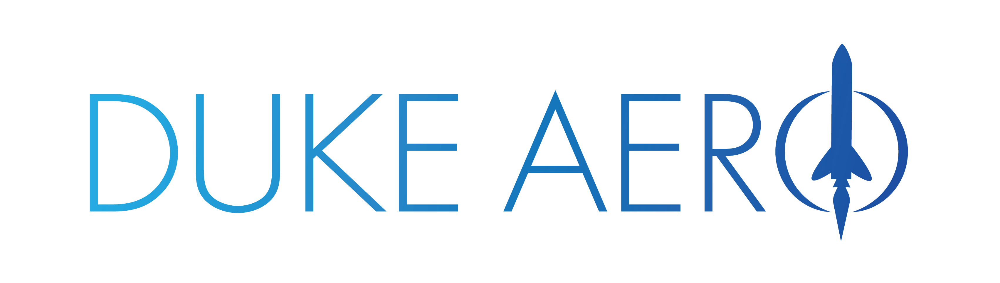

I build a Python library for metrics on academic portfolios and simulate peer-review markets.
I modelled a robotic gripper in PyBullet and trained physics-informed networks on fluid flow.

I worked on a Teensy controller that steers a guided parachute. The team won the Jim Furfaro Award at the 2024 Spaceport America Cup.
I wrote a Python pipeline to calibrate optical flow sensors and programmed a motorized stage for a microwave imaging device.
I interviewed staff and students and wrote news articles.
I made a polystyrene substrate for Raman spectroscopy to detect melamine.